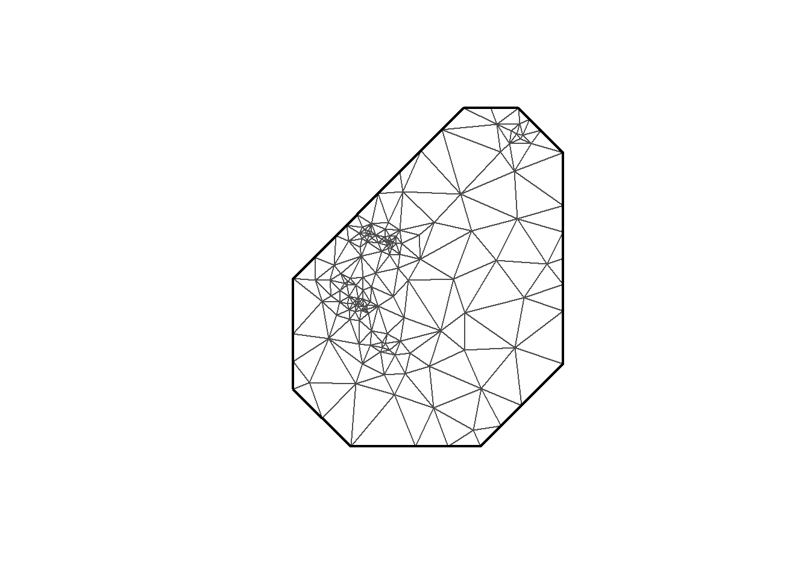
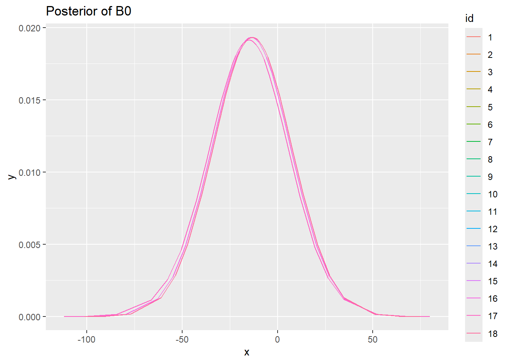
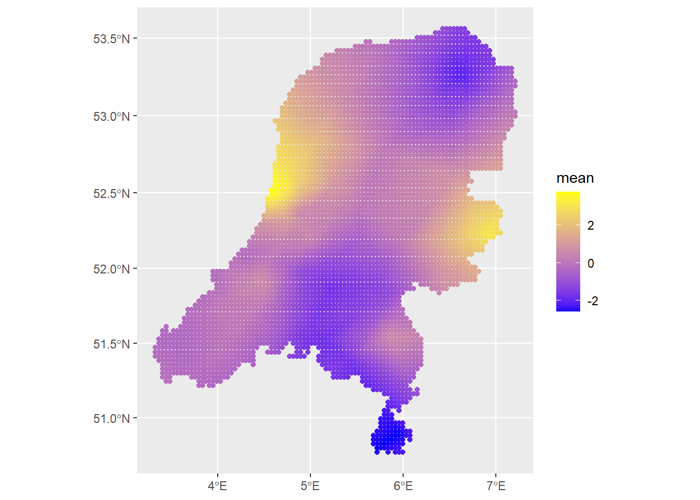

library(INLA)
library(inlabru)
library(sf)
library(rnaturalearth)
library(ggplot2)
library(viridis)
library(terra)
library(arrow)
library(dplyr)
library(stringr)
library(readr)3 Spatial modelling with INLA and SPDE
3.1 INLA
Having covered the need-to-know material for INLA and SPDE, next I’m going to build a spatial model using both INLA and inlabru. Comparing the two packages is useful because, though they can be expected to give the same results in most cases, the implementation is a bit different. Knowing when using the more complicated INLA can be justified is a useful exercise, I think. The template for this code using INLA follows the air pollution example from the geostatistical chapter in Paula Moraga’s Spatial Statistics book, https://www.paulamoraga.com/book-spatial/sec-geostatisticaldataSPDE.html. The difference is that I will use air pollution data from the Netherlands, compare INLA and inlabru, and consider a few extra technical details. For the inlabru code I follow the examples the authors provide at their site for the package: https://inlabru-org.github.io/inlabru/articles/.
The model fit here is a simple geostatistical one. I’ll be using air pollution data in the Netherlands. The model can be written as \[ Y_i \sim N(u_i, \sigma^2)\\ u_i = \beta_0 + \beta_1\cdot\text{temperature}_i + \beta_2\cdot\text{precipitation}_i + S(x_i). \] So it’s a typical Gaussian distributed variable with underlying latent structure $S(x_i), otherwise referred to as a random effect modelled as a Gaussian process that is spatially indexed. In either case, it represents measurements taken at discrete locations but used to describe or estimate a spatially continuous process, such as air pollution.
Let’s get straight to data downloading and processing. I downloaded air pollution data in the Belgium and Netherlands for the year of 2023 from https://eeadmz1-downloads-webapp.azurewebsites.net/. For now I just focus on the Netherlands data.
In the dataset, 8 is the id for Nitrogen dioxide, 5 Particulate matter < 10 µm, and 6001 for Particulate matter < 2.5 µm. I focused on Particulate matter < 2.5 µm, referred to as PM2.5.
#data_path <- file.path("D:", "data", "air_quality_data", "belgium_eea", "E1a")
data_path <- file.path("D:", "data", "air_quality_data", "netherlands_eea", "E1a")
d <- open_dataset(data_path)
d %>% group_by(Samplingpoint) |> filter(Pollutant==6001, Value>-1) |> collect() -> df
df# A tibble: 442,873 × 12
# Groups: Samplingpoint [53]
Samplingpoint Pollutant Start End Value Unit
<chr> <int> <dttm> <dttm> <dbl> <chr>
1 NL/SPO-NL00007… 6001 2023-01-01 01:00:00 2023-01-01 02:00:00 131. ug.m…
2 NL/SPO-NL00007… 6001 2023-01-01 02:00:00 2023-01-01 03:00:00 86.2 ug.m…
3 NL/SPO-NL00007… 6001 2023-01-01 03:00:00 2023-01-01 04:00:00 30.7 ug.m…
4 NL/SPO-NL00007… 6001 2023-01-01 04:00:00 2023-01-01 05:00:00 11 ug.m…
5 NL/SPO-NL00007… 6001 2023-01-01 05:00:00 2023-01-01 06:00:00 9.1 ug.m…
6 NL/SPO-NL00007… 6001 2023-01-01 06:00:00 2023-01-01 07:00:00 5.3 ug.m…
7 NL/SPO-NL00007… 6001 2023-01-01 07:00:00 2023-01-01 08:00:00 2.8 ug.m…
8 NL/SPO-NL00007… 6001 2023-01-01 08:00:00 2023-01-01 09:00:00 2.3 ug.m…
9 NL/SPO-NL00007… 6001 2023-01-01 10:00:00 2023-01-01 11:00:00 -0.6 ug.m…
10 NL/SPO-NL00007… 6001 2023-01-01 11:00:00 2023-01-01 12:00:00 1.4 ug.m…
# ℹ 442,863 more rows
# ℹ 6 more variables: AggType <chr>, Validity <int>, Verification <int>,
# ResultTime <dttm>, DataCapture <dbl>, FkObservationLog <chr>Next add the the locations of the measuring stations to the dataset. The air pollution observations include an station identifier, but the coordinates of each of these stations is not included. It comes in a separate dataset.
df <- df %>%
#mutate(Samplingpoint = str_remove(Samplingpoint, "BE/"))
mutate(Samplingpoint = str_remove(Samplingpoint, "NL/"))
#station_location_path <- file.path("D:", "data", "air_quality_data", "eea_stations_2023", "belgium_stations_2023.csv")
station_location_path <- file.path("D:", "data", "air_quality_data", "eea_stations_2023", "nl_stations_2023.csv")
station_locations <- read_csv(station_location_path)Rows: 4685 Columns: 27
── Column specification ────────────────────────────────────────────────────────
Delimiter: ","
chr (19): Country, Air Quality Network, Air Quality Network Name, Air Qualit...
dbl (8): Year, Air Pollution Level, Data Coverage, Verification, Longitude,...
ℹ Use `spec()` to retrieve the full column specification for this data.
ℹ Specify the column types or set `show_col_types = FALSE` to quiet this message.station_locations <- rename(station_locations, Samplingpoint = 'Sampling Point Id')
station_locations %>%
distinct(Samplingpoint, Longitude, Latitude) -> unique_locations
merged_df <- df %>%
left_join(unique_locations %>% select(Samplingpoint, Longitude, Latitude), by = "Samplingpoint")
station_locations_sf <- st_as_sf(station_locations, coords = c("Longitude", "Latitude"))
air_sf <- st_as_sf(merged_df, coords = c("Longitude", "Latitude"))
st_crs(air_sf) <- "EPSG:4326"
air_sf$station_locationsWarning: Unknown or uninitialised column: `station_locations`.NULLThen examine the time series
distinct_stations <- unique(air_sf$Samplingpoint)[1:12]
plotting_stations <- air_sf[air_sf$Samplingpoint%in%distinct_stations,]
plotting_stations %>%
ggplot(aes(x=Start, y=Value)) +
geom_line() +
facet_wrap(~ Samplingpoint) +
theme(axis.text.x = element_text(angle = 45, hjust = 1)) +
labs(title = "Time series of monitoring stations", x = "Time, hourly", y = "Conc (μg/m³)")
The above figure shows 12 of the stations observations over 2023. The data is currently at the hourly resolution.
Next, load a map of the Netherlands. The border is from https://service.pdok.nl/kadaster/bestuurlijkegrenzen/atom/bestuurlijke_grenzen.xml. A number of processing steps are done here, namely to generate some grid points within the map border. These points will be used as locations to make spatial predictions later on.
map <- st_read(file.path("D:", "data", "maps", "netherlands_bestuurlijkegrenzen_2021", "bestuurlijkegrenzen.gpkg"))
map <- st_union(map)
map <- st_as_sf(map)
map <- st_transform(map, crs = st_crs(air_sf))
# raster grid covering map
grid <- terra::rast(map, nrows = 100, ncols = 100)
# coordinates of all cells
xy <- terra::xyFromCell(grid, 1:ncell(grid))
# transform points to a sf object
dp <- st_as_sf(as.data.frame(xy), coords = c("x", "y"),
crs = st_crs(map))
# indices points within the map
indicespointswithin <- which(st_intersects(dp, map,
sparse = FALSE))
# points within the map
dp <- st_filter(dp, map)Let’s check the map and grid of prediction points.
# plot
ggplot() + geom_sf(data = map) +
geom_sf(data = dp)We can see the grid of spatial points is at quite a high resolution.
The next step is to download temperature and precipitation data using the geodata package.
library(geodata)
# With geodata library
save_path <- file.path("D:", "data", "air_quality_data", "aux_variables")
covtemp <- worldclim_global(var = "tavg", res = 10,
path = save_path)
covprec <- worldclim_global(var = "prec", res = 10,
path = save_path)
# Extract at observed locations
air_sf$covtemp <- extract(mean(covtemp), st_coordinates(air_sf))[, 1]
air_sf$covprec <- extract(mean(covprec), st_coordinates(air_sf))[, 1]
# Extract at prediction locations
dp$covtemp <- extract(mean(covtemp), st_coordinates(dp))[, 1]
dp$covprec <- extract(mean(covprec), st_coordinates(dp))[, 1]We can then take a look at the air pollution and the covariates at the measuring stations locations.
ggplot() + geom_sf(data = map) +
geom_sf(data = air_sf, aes(col = Value)) +
ggtitle("Air pollution at measuring stations") +
scale_color_viridis()ggplot() + geom_sf(data = map) +
geom_sf(data = air_sf, aes(col = covtemp)) +
ggtitle("Temperature at measuring stations") +
scale_color_viridis()ggplot() + geom_sf(data = map) +
geom_sf(data = air_sf, aes(col = covprec)) +
ggtitle("Precipitation at measuring stations") +
scale_color_viridis()
The above code also extracted the covariate data at each prediction point. We can see what that looks like as well:
ggplot() + geom_sf(data = map) +
geom_sf(data = dp, aes(col = covtemp)) +
ggtitle("Temperature at prediction points") +
scale_color_viridis()
ggplot() + geom_sf(data = map) +
geom_sf(data = dp, aes(col = covprec)) +
ggtitle("Precipitation at prediction points") +
scale_color_viridis()
Next mean impute out the NANs in the data. A better imputation method would certainly be better, wouldn’t it?
dp <- dp %>% mutate(covprec=ifelse(is.na(covprec), mean(covprec, na.rm=TRUE), covprec),
covtemp=ifelse(is.na(covtemp), mean(covtemp, na.rm=TRUE), covtemp))
ggplot() + geom_sf(data = map) +
geom_sf(data = dp, aes(col = covtemp)) +
scale_color_viridis()
ggplot() + geom_sf(data = map) +
geom_sf(data = dp, aes(col = covprec)) +
scale_color_viridis()
I saw in the INLA forum, https://groups.google.com/g/r-inla-discussion-group/c/z_v2oIh2egs, that it can be helpful to work with units of kilometers. In my experience, this has also held true.
projMercator<-"+proj=merc +a=6378137 +b=6378137 +lat_ts=0 +lon_0=0
+x_0=0 +y_0=0 +k=1 +units=km +nadgrids=@null +wktext +no_defs"
air_sf_project <- st_transform(air_sf, crs = projMercator)
dp <- st_transform(dp, crs = projMercator)
# Observed coordinates
coo <- st_coordinates(air_sf_project)
# Predicted coordinates
coop <- st_coordinates(dp)
#summary(dist(coo)) # summary of distances between locationsThat gives us enough data and more importantly, motivation, to make a model. Now I can get into the INLA implementation. First: the mesh. I mentioned the mesh in the theory discussion. The mesh enables us to compute the discretized approximation to the GF using a GRMF.
INLA provides the function to create the mesh. Here I’m using inla.mesh.2d. Let’s take a look at a few meshes created with different parameter options.
mesh0 <- inla.mesh.2d(loc = coo, max.edge=c(200, 500))
mesh1 <- inla.mesh.2d(loc = coo, max.edge=c(200, 500), cutoff=1)
mesh2 <- inla.mesh.2d(loc = coo, max.edge=c(200, 500), cutoff=0.3)
mesh3 <- inla.mesh.2d(loc = coo, max.edge=c(100, 150), cutoff=1)
mesh4 <- inla.mesh.2d(loc = coo, max.edge=c(100, 150), cutoff=0.3)
mesh5 <- inla.mesh.2d(loc = coo, max.edge=c(100), cutoff=1)
mesh6 <- inla.mesh.2d(loc = coo, max.edge=c(100), cutoff=0.3)
plot(mesh0)
plot(mesh1)
plot(mesh2)
plot(mesh3)
plot(mesh4)
plot(mesh5)
plot(mesh6)
# Using mesh0
mesh <-inla.mesh.2d(loc = coo, max.edge=c(200, 500), crs=st_crs(air_sf_project))There are a number of options to play with: max.edge controls the largest triangle edge length, and providing it with a vector c(inner, outer) sets the max edge for inside the boundary and outside the boundary. The purpose of this is to avoid boundary effects in the estimation of the model, where boundary values have high variance. (lindgren2015?) suggests to extend the domain by some amount.
cutoff is the minimum allowed distance between points. Otherwise, points are replaced by a single vertex. For areas of high clusters of points, this could be useful to reduce redundancy. If no boundary is set the mesh is created on the convex hull of the observations.
https://punama.github.io/BDI_INLA/ is also a good source for this. Thanks!
Next we construct the A matrix that “A that projects the GRF from the observations to the vertices of the triangulated mesh” (Moraga (2023)). The A matrix has a row for each observation, and columns equal to the number of vertices in the mesh. The number of vertices in our mesh can be checked with mesh$n. Below, two different meshes are generated. One for the observation locations, and one for the prediction locations. We need to set these both at once, because to make predictions in INLA we have to have that all pre-specified, unlike with the typical modelling style in R. That was why I created the grid of prediction points initially.
The inla.spde2.matern function is used to build the SPDE model with matern covariance, using the mesh. The smoothness parameter \(\nu\) for the SPDE is implicitly set to 1, where in the spatial case \(d=2\) and \(\alpha=\nu + d/2 = 2\), seen in the code below. In the model itself the Matern covariance function parameters will be estimated; more on that later.
plot(mesh)
points(coo, col = "red")
axis(1)
axis(2)
spde <- inla.spde2.matern(mesh = mesh, alpha = 2, constr = TRUE)
indexs <- inla.spde.make.index("s", spde$n.spde)
lengths(indexs) s s.group s.repl
280 280 280 # Make the projection matrices
A <- inla.spde.make.A(mesh = mesh, loc = coo)
Ap <- inla.spde.make.A(mesh = mesh, loc = coop)
dim(A)[1] 52 280dim(Ap)[1] 4944 280The index allows us to extract fitted values from the model, which has a length equal to the number of vertices in the mesh. s.group and s.repl (replicate) are related how the dependence structure is specified in the model.
Then we have to make the INLA stack. This is done because we need to combine the data for estimation with the prediction data, as well as the projection matrices. It contains the response data, the list of covariate data–here the temperature and precipitation, the projection matrices, and the indices. Though this is a bit technical, it actually adds a lot of flexibility to INLA because we can manipulate the stack based on the data structure that we want. For example, when modelling multiple likelihoods in a single model, these will be combined all within the stack.
# stack for estimation stk.e
stk.e <- inla.stack(tag = "est",
data = list(y = air_sf_project$Value), A = list(1, A),
effects = list(data.frame(b0 = rep(1, nrow(A)),
covtemp = air_sf_project$covtemp, covprec = air_sf_project$covprec),
s = indexs))
#stk.e
# stack for prediction stk.p
stk.p <- inla.stack(tag = "pred",
data = list(y = NA), A = list(1, Ap),
effects = list(data.frame(b0 = rep(1, nrow(Ap)),
covtemp = dp$covtemp, covprec = dp$covprec),
s = indexs))
#stk.p
# stk.full has stk.e and stk.p
stk.full <- inla.stack(stk.e, stk.p)Finally, we can specify the model in INLA. All the hard work has been done above and at least the model specification in INLA is easier. This model has its mean specified by \[
\mu_i = \beta_0 + \beta_1 \cdot \text{temp}_i + \beta_2 \cdot \text{prec}_i + S(x_i),
\] so there is some contribution from fixed effects as well as a latent process modelled as a zero-mean Gaussian Random Field with Matern covariance function. This puts us well within INLA territory. The model equation can be seen quite clearly in the formula variable below. We include 0 to remove the intercept that is added by default because we specifically refer to \(\beta_0\) in the stack and then need to do so in the model equation.
formula <- y ~ 0 + b0 + covtemp + covprec + f(s, model = spde)
res <- inla(formula, family = "gaussian",
data = inla.stack.data(stk.full),
control.predictor = list(compute = TRUE,
A = inla.stack.A(stk.full)),
control.compute = list(return.marginals.predictor = TRUE))Notice that I am passing a few options to the INLA call. Importantly, control.compute. We have a nice description of the control options at https://becarioprecario.bitbucket.io/inla-gitbook/ch-INLA.html#sec:controlops. It controls what quantities are actually computed and returned during the INLA estimation. For example, there are a few different information criteria that it can returned. control.predictor will compute the posterior marginals of the parameters. All the options can be seen with the command inla.set.control.compute.default()
Once the model is fit, we can inspect the fixed parameters, the estimated latent field, as well as the hyperparameters for the latent field.
res$summary.fixed mean sd 0.025quant 0.5quant 0.975quant
b0 -15.29769449 21.3472625 -57.7595559 -15.17245556 26.4583704
covtemp 2.17003514 2.0949918 -1.8002534 2.09513247 6.5392273
covprec -0.01550201 0.2034683 -0.4214077 -0.01404086 0.3818577
mode kld
b0 -15.17140288 4.819848e-08
covtemp 2.09359434 3.231952e-07
covprec -0.01411427 5.717319e-08# Latent field is here but it will print out a lot of values
# res$summary.random$s
res$summary.hyperpar mean sd 0.025quant
Precision for the Gaussian observations 0.3076177 0.07974476 0.1774270
Theta1 for s 1.9282907 0.53127489 0.9078608
Theta2 for s -4.1344657 0.69219969 -5.5329805
0.5quant 0.975quant mode
Precision for the Gaussian observations 0.2986888 0.4890943 0.2825065
Theta1 for s 1.9197803 2.9993397 1.8830630
Theta2 for s -4.1223427 -2.8081708 -4.0698031This shows us the relevant statistics for our intercept and parameters for the covariates.
Our predictions at the points in our spatial field have already been made, so we need to extract the estimated values:
index <- inla.stack.index(stack = stk.full, tag = "pred")$data
pred_mean <- res$summary.fitted.values[index, "mean"]
pred_ll <- res$summary.fitted.values[index, "0.025quant"]
pred_ul <- res$summary.fitted.values[index, "0.975quant"]
grid$mean <- NA
grid$ll <- NA
grid$ul <- NA
grid$mean[indicespointswithin] <- pred_mean
grid$ll[indicespointswithin] <- pred_ll
grid$ul[indicespointswithin] <- pred_ul
summary(grid) # negative values for the lower limit mean ll ul
Min. :1.338 Min. :-4.722 Min. : 3.733
1st Qu.:3.626 1st Qu.: 0.359 1st Qu.: 6.530
Median :4.665 Median : 1.462 Median : 7.813
Mean :4.595 Mean : 1.368 Mean : 7.874
3rd Qu.:5.553 3rd Qu.: 2.405 3rd Qu.: 9.087
Max. :8.316 Max. : 6.753 Max. :12.860
NA's :5056 NA's :5056 NA's :5056 Then create a plot of the predictions:
library(rasterVis)Loading required package: latticelevelplot(grid, layout = c(1, 3),
names.attr = c("Mean", "2.5 percentile", "97.5 percentile"))
This shows the mean and the 95% credible interval surrounding it.
When compute=TRUE in control.predictor, we can also obtain the quantities below. https://www.paulamoraga.com/book-geospatial/sec-inla.html describes this.
res$summary.fitted.values
res$summary.linear.predictor
marginals.linear.predictor
marginals.fitted.valuesbut it’s a lot of output so I won’t show it.
From https://becarioprecario.bitbucket.io/inla-gitbook/ch-INLA.html#model-fitting-strategies, we can also see the differences using the different fitting strategies, set by the control.inla argument. We can change both the Gaussian approximation strategy for the posterior full conditional distributions, as well as the integration strategy used to integrate out the \(\theta_{-k}\) parameters to get the marginal distribution for \(\theta_k\). The "grid" option is the most costly, compared to the central composite design ("ccd"). In the empirical bayes option ("eb"), the posterior mode is used as the integration point.
approx_strategy <- c("gaussian", "simplified.laplace", "laplace")
int_strategy <- c("ccd", "grid", "eb")
models <- c("iid", "matern")
fits <- matrix(nrow=length(approx_strategy)*length(int_strategy)*length(models), ncol=3)
fits_marginals_b <- vector(mode="list", length=length(approx_strategy)*length(int_strategy)*length(models))
fits_marginals_temp <- vector(mode="list", length=length(approx_strategy)*length(int_strategy)*length(models))
fits_marginals_prec <- vector(mode="list", length=length(approx_strategy)*length(int_strategy)*length(models))
index_f <- 0
model_names <- c()
for (m in models){
for(a in approx_strategy){
for (i in int_strategy){
index_f <- index_f + 1
if (m=="matern"){
formula_approx <- y ~ 0 + b0 + covtemp + covprec + f(s, model = spde)
}
else{
formula_approx <- y ~ 0 + b0 + covtemp + covprec + f(s, model = "iid")
}
print(paste(a, ", ", i, ", ", m))
model_names <- c(model_names, paste(a, ", ", i, ", ", m))
fit_approx <- inla(formula, family = "gaussian",
data = inla.stack.data(stk.full),
control.inla = list(strategy = a, int.strategy = i),
control.compute = list(cpo = TRUE, dic = TRUE, waic = TRUE),
control.predictor = list(compute = TRUE, A = inla.stack.A(stk.full)))
fits[index_f,] <- fit_approx$summary.fixed$mean
fits_marginals_b[[index_f]] <- fit_approx$marginals.fixed$b0
fits_marginals_temp[[index_f]] <- fit_approx$marginals.fixed$covtemp
fits_marginals_prec[[index_f]] <- fit_approx$marginals.fixed$covprec
}
}
}[1] "gaussian , ccd , iid"
[1] "gaussian , grid , iid"
[1] "gaussian , eb , iid"
[1] "simplified.laplace , ccd , iid"
[1] "simplified.laplace , grid , iid"
[1] "simplified.laplace , eb , iid"
[1] "laplace , ccd , iid"
[1] "laplace , grid , iid"
[1] "laplace , eb , iid"
[1] "gaussian , ccd , matern"
[1] "gaussian , grid , matern"
[1] "gaussian , eb , matern"
[1] "simplified.laplace , ccd , matern"
[1] "simplified.laplace , grid , matern"
[1] "simplified.laplace , eb , matern"
[1] "laplace , ccd , matern"
[1] "laplace , grid , matern"
[1] "laplace , eb , matern"This prints out all the combinations of approximation, integration strategy and correlation structure.
Now we can compare the means of the parameters per different model set-up.
fits_df <- as.data.frame(fits)
names(fits_df) <- c("b0", "covtemp", "covprec")
fits_df$models <- model_names
fits_df b0 covtemp covprec models
1 -13.85789 2.049883 -0.01973532 gaussian , ccd , iid
2 -15.29769 2.170035 -0.01550201 gaussian , grid , iid
3 -13.11329 1.992509 -0.02262044 gaussian , eb , iid
4 -13.85789 2.049883 -0.01973532 simplified.laplace , ccd , iid
5 -15.29769 2.170035 -0.01550201 simplified.laplace , grid , iid
6 -13.11329 1.992509 -0.02262044 simplified.laplace , eb , iid
7 -13.85789 2.049883 -0.01973532 laplace , ccd , iid
8 -15.29769 2.170035 -0.01550201 laplace , grid , iid
9 -13.11329 1.992509 -0.02262044 laplace , eb , iid
10 -13.85789 2.049883 -0.01973532 gaussian , ccd , matern
11 -15.29769 2.170035 -0.01550201 gaussian , grid , matern
12 -13.11329 1.992509 -0.02262044 gaussian , eb , matern
13 -13.85789 2.049883 -0.01973532 simplified.laplace , ccd , matern
14 -15.29769 2.170035 -0.01550201 simplified.laplace , grid , matern
15 -13.11329 1.992509 -0.02262044 simplified.laplace , eb , matern
16 -13.85789 2.049883 -0.01973532 laplace , ccd , matern
17 -15.29769 2.170035 -0.01550201 laplace , grid , matern
18 -13.11329 1.992509 -0.02262044 laplace , eb , maternIt’s also possible to compare the posteriors themselves.
# Combine dataframes
df_list_1 <- lapply(fits_marginals_b, function(m) {
data.frame(x = m[,1], y = m[,2])
})
df_list_2 <- lapply(fits_marginals_temp, function(m) {
data.frame(x = m[,1], y = m[,2])
})
df_list_3 <- lapply(fits_marginals_prec, function(m) {
data.frame(x = m[,1], y = m[,2])
})
new_df_1 <- do.call(rbind, df_list_1)
new_df_2 <- do.call(rbind, df_list_2)
new_df_3 <- do.call(rbind, df_list_3)
# Add an ID column
row_counts <- sapply(fits_marginals_b, nrow)
ids <- factor(rep(1:length(fits_marginals_b), each = row_counts))Warning in rep(1:length(fits_marginals_b), each = row_counts): first element
used of 'each' argumentnew_df_1$id <- ids
new_df_2$id <- ids
new_df_3$id <- ids
ggplot(new_df_1, aes(x = x, y = y, colour = id)) +
geom_line() + ggtitle("Posterior of B0")
ggplot(new_df_2, aes(x = x, y = y, colour = id)) +
geom_line() + ggtitle("Posterior of Temperature parameter")
ggplot(new_df_3, aes(x = x, y = y, colour = id)) +
geom_line() + ggtitle("Posterior of Precipitation parameter")
So with this data set there is not really much different between estimation methods, regardless of the options used. I suppose that is a good sign?
Another useful feature is the set of functions that can be used to manipulate the marginal distributions: <https://becarioprecario.bitbucket.io/inla-gitbook/ch-INLA.html#sec:marginals. for example,
inla.mmarginal(res$marginals.fixed$b0)[1] -14.90955plot(res$marginals.fixed$b0, type = "l", xlab = "b0", ylab = "Density")# This should give about the same answer:
res$summary.fixed$mode[1][1] -15.17143.2 Inlabru
Next, let’s write that model in inlabru and check if the estimates are the same. We can use the same mesh and spde function as we used before. And also the same formula! But what is especially nice about inlabru is that we don’t have to set up the stack with the projection matrices. We just model the response variable as a function of the covariates in the dataset we set up earlier and the locations of the observations. In inlabru we can use the sf dataset object directly. Because of this, it’s amazingly simple to fit the model, compared to INLA.
formula <- Value ~ Intercept(1) + covtemp + covprec + f(geometry, model = spde)
# Fit the model for inlabru
fit <- bru(formula, data = air_sf_project, family = "gaussian")
# Summarize the results
summary(fit)inlabru version: 2.12.0
INLA version: 24.05.01-1
Components:
Intercept: main = linear(1), group = exchangeable(1L), replicate = iid(1L), NULL
covtemp: main = linear(covtemp), group = exchangeable(1L), replicate = iid(1L), NULL
covprec: main = linear(covprec), group = exchangeable(1L), replicate = iid(1L), NULL
f: main = spde(geometry), group = exchangeable(1L), replicate = iid(1L), NULL
Likelihoods:
Family: 'gaussian'
Tag: ''
Data class: 'sf', 'grouped_df', 'tbl_df', 'tbl', 'data.frame'
Response class: 'numeric'
Predictor: Value ~ .
Used components: effects[Intercept, covtemp, covprec, f], latent[]
Time used:
Pre = 1.16, Running = 0.679, Post = 0.335, Total = 2.18
Fixed effects:
mean sd 0.025quant 0.5quant 0.975quant mode kld
Intercept -15.298 21.347 -57.760 -15.172 26.458 -15.171 0
covtemp 2.170 2.095 -1.800 2.095 6.539 2.094 0
covprec -0.016 0.203 -0.421 -0.014 0.382 -0.014 0
Random effects:
Name Model
f SPDE2 model
Model hyperparameters:
mean sd 0.025quant 0.5quant
Precision for the Gaussian observations 0.308 0.080 0.177 0.299
Theta1 for f 1.928 0.531 0.908 1.920
Theta2 for f -4.134 0.692 -5.533 -4.122
0.975quant mode
Precision for the Gaussian observations 0.489 0.283
Theta1 for f 2.999 1.883
Theta2 for f -2.808 -4.070
Deviance Information Criterion (DIC) ...............: 231.65
Deviance Information Criterion (DIC, saturated) ....: 71.69
Effective number of parameters .....................: 16.69
Watanabe-Akaike information criterion (WAIC) ...: 232.14
Effective number of parameters .................: 14.00
Marginal log-Likelihood: -145.00
is computed
Posterior summaries for the linear predictor and the fitted values are computed
(Posterior marginals needs also 'control.compute=list(return.marginals.predictor=TRUE)')Fortunately, that gives nearly the same estimates as from INLA There’s also a lot of additional useful output, including the spatial variance \(\tau\) and spatial range \(\kappa\) for the spatial field, respectively referred to as theta1 and theta2 by default (which are a log transformation of the parameters). We can also see the information criteria. We could have gotten this same output from INLA with summary(fit).
Then let’s plot the predictions. In inlabru, we don’t have to make predictions at the same time as the model fitting, which is convenient.
map_prj <- st_transform(map, crs = projMercator)
predictions1 <- predict(fit, newdata=dp, formula = ~ Intercept + covtemp + covprec + f)
predictions2 <- predict(fit, newdata=dp, formula = ~ f)
ggplot() +
geom_sf(data=predictions1, aes(color=mean)) +
scale_colour_gradient(low = "blue", high = "yellow")
# Check the contribution of just the spatial field
ggplot() +
geom_sf(data=predictions2, aes(color=mean)) +
scale_colour_gradient(low = "blue", high = "yellow")
Looks very nice. Of course, there are a lot more diagnostics we could consider, including looking at the posterior distributions of all parameters and hyperparameters and checking the information criteria. We could also consider the effect of setting priors on the SPDE parameters. This will end up making a difference for more complex models. I could also simulate data and see how well INLA recovers the parameters. There is also fitting a temporal model in both packages.
But for now, that concludes this section, showing how to fit spatial model in INLA and inlabru. The next section shows how to do this for a point process.